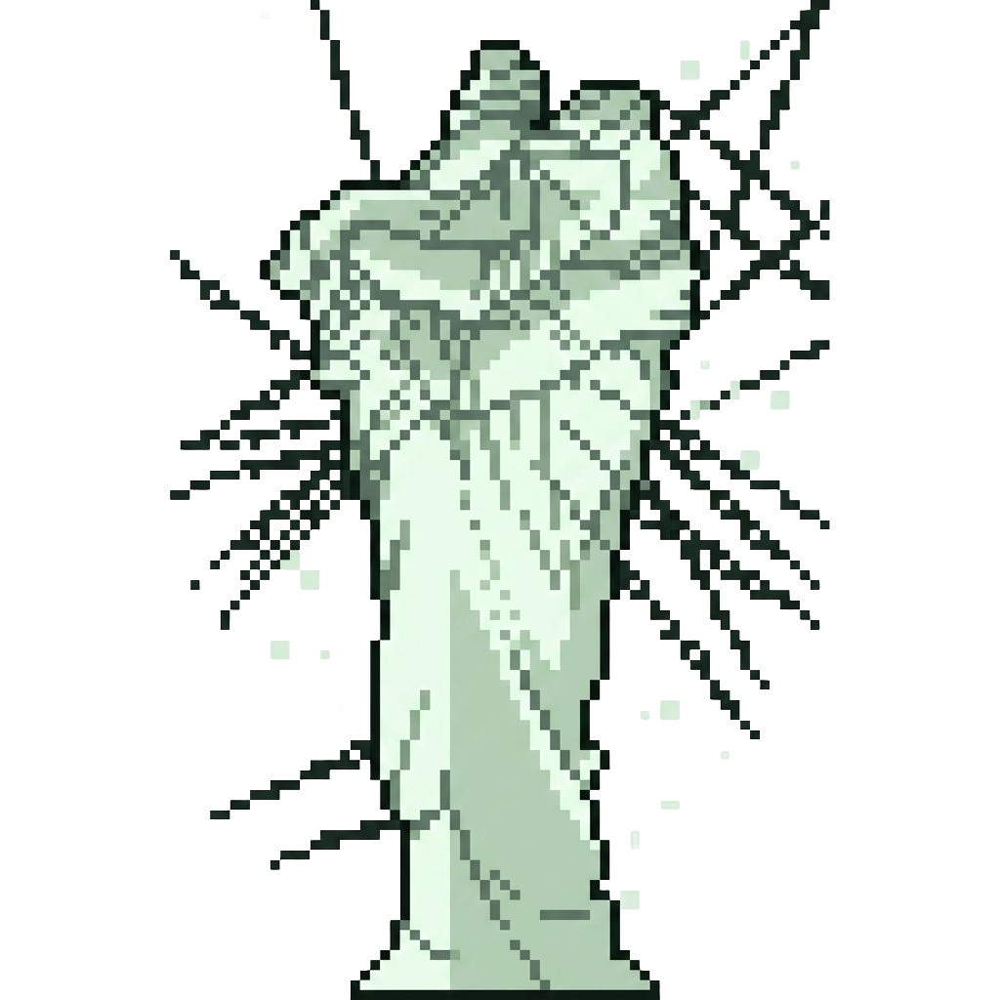

Махорага
Пятьсот здоровья, колесо над головой и одно правило: каждым видом урона его можно ранить всерьёз только один раз. Потом колесо поворачивается, и этот урон перестаёт на него действовать. Приходит на твой зов, дерётся за тебя, но и тебя может перемолоть.
Аванпост
Свиток призыва не крафтится. Он висит в рамке внутри заброшенного аванпоста, а аванпост в мире всего один: он появляется при первом запуске мира, ровно на полпути от точки спавна к ближайшей крепости Края.
Свиток

Ритуал
Приземление
На 21-й секунде ритуала Махорага падает с высоты 67 блоков над точкой призыва. Удар выбивает кратер 3×3 глубиной в три блока, а вокруг расползается порча: кольцо случайного радиуса от 4 до 7. Каждый верхний блок в кольце с шансом от 90% у края кратера до 35% на границе меняется на что-то из четырнадцати мрачных блоков.
Адаптация
Пятьсот здоровья поделены на десять сегментов по 50. Удар не может снести больше, чем осталось до конца текущего сегмента, даже взрыв на тысячу урона. Вид урона, который добил сегмент, становится для Махораги пустым местом. Десятый сегмент открывает вторую фазу.
Как урон попадает в категорию
Проверка идёт сверху вниз, первое совпадение и есть категория. Поэтому горящий меч с заговором огня может сломать сегмент огнём, а не ближним боем: всё решает, какой тик урона добил полоску.
Арсенал
Что он сделает прямо сейчас
Перетаскивай цель. Навыки проверяются по старшинству: крик, лазер, прыжок, рывок, и только потом кулаки. Первый подходящий и не на перезарядке срабатывает.
Хозяин
Махорага не выбирает врагов сам. Цель ему назначает хозяин: удар пустой рукой по мобу или игроку ставит на него метку. Каждый следующий удар добавляет приоритет, и Махорага идёт за тем, у кого меток больше. При равенстве побеждает тот, кого отметили раньше.
Пока целей нет, он держится в 1,7 блока за спиной хозяина и смотрит туда же, куда смотришь ты. Хозяина он не атакует никогда, даже если ты сам бьёшь его.
Лазер не разбирает своих
Кулаки, прыжок и крик бьют только отмеченные цели. Лазер другое дело: луч длиной 20 блоков прожигает тоннель 3×3 и ранит всех живых на пути, кроме самого Махораги. Хозяин тоже живой.
Трофеи
Полевой журнал
Версии
Достижения
Колесо повернулось десять раз.
Одиннадцатого не будет